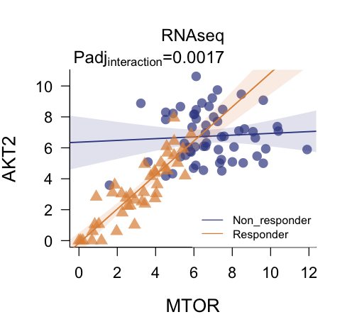

Differential Network Analysis with multiDEGGs
Elisabetta Sciacca, Myles Lewis
Source:vignettes/multiDEGGs_vignette.Rmd
multiDEGGs_vignette.RmdIntroduction
The multiDEGGs package performs multi-omic differential network analysis by identifying differential interactions between molecular entities (genes, proteins, miRNAs, or other biomolecules) across the omic datasets provided.
For each omic dataset, a differential network is constructed, where links represent statistically significant differential interactions between entities. These networks are then integrated into a comprehensive visualization using distinct colors to distinguish interactions from different omic layers. This unified visualization allows interactive exploration of cross-omic patterns (e.g., differential interactions present at both transcript and protein level). For each link, users can access differential statistical significance metrics (p-values or adjusted p-values, calculated via robust or traditional linear regression with interaction term), and differential regression plots.
Beyond network visualization and exploration, multiDEGGs extends its utility into predictive modeling applications. The identified differential interactions can be leveraged as engineered features in machine learning pipelines, providing biologically meaningful predictors that capture relational information between molecular entities. The package includes specialized functions for nested cross-validation that ensure proper feature selection and engineering without data leakage, enabling the construction of robust and interpretable predictive models.
Installation
Install from CRAN:install.packages("multiDEGGs")
Install from Github:devtools::install_github("elisabettasciacca/multiDEGGs")
Quick start - Generate Differential Networks
Let’s start by loading the package and sample data:
library(multiDEGGs)
data("synthetic_metadata")
data("synthetic_rnaseqData")
data("synthetic_proteomicData")
data("synthetic_OlinkData")Generate Differential Networks:
assayData_list <- list("RNAseq" = synthetic_rnaseqData,
"Proteomics" = synthetic_proteomicData,
"Olink" = synthetic_OlinkData)
deggs_object <- get_diffNetworks(assayData = assayData_list,
metadata = synthetic_metadata,
category_variable = "response",
regression_method = "lm",
padj_method = "bonferroni",
verbose = FALSE,
show_progressBar = FALSE,
cores = 2)Key Parameters of get_diffNetworks
It’s worth explaining some of the important parameters of
get_diffNetworks:
assayData: accepts either a single normalized matrix/data frame (for single omic differential analysis), or a list of matrices/data frames (for multi-omic scenarios). For multi-omic analysis, it’s highly recommended to use a named list of data. If unnamed, sequential names (assayData1, assayData2, etc.) will be assigned to identify each matrix or data frame.metadata: can also be a named factor vector, with names matching the patient IDs in column names of the assay data matrices/data frames. In that case, the category_variable can remain unset (NULL by default).category_subset: this parameter can restrict the analysis to a certain subset of categories available in the metadata/category vector.regression_method: set to"lm"by default because it is faster and highly recommended in machine learning scenarios, where the function might be repeatedly called many times. For basic differential analyses,"rlm"can also be used and may perform better in some cases.percentile_vector: by default, molecular targets (genes, proteins, etc.) whose expression level is below the 35th percentile of the entire data matrix are excluded from the analysis. This threshold can be modified by specifying the percentile vector that is internally used for the percolation analysis. For example, to remove only targets below the 25th percentile, setpercentile_vector = seq(0.25, 0.98, by = 0.05).padj_method: the default method is Bonferroni. Storey’s q values often give more generous results but theqvaluepackage needs to be installed first.
NOTE: Not all patient IDs need to be present across datasets. Different numbers of samples per omic are acceptable. Only IDs whose data is available in the colnames of the assayData will be included in the analysis. Missing IDs will be listed in a message similar to:
The following samples IDs are missing in Proteomics: PT001, PT005, PT0030
Visualization
The deggs_object now contains the differential networks
for each omic data in assayData_list. These networks can be
integrated into a comprehensive visualization where different colors
distinguish links from different omic layers.
View_diffNetworks(deggs_object)This visualization interface allows you to:
- Navigate the networks associated with each patient category
- Filter by link significance
- Search for specific genes inside the network

Thicker links correspond to higher significant p-values.
The direction of the arrows shows the relationship direction reported in
literature, not derived from the data.
The user can visualize differential regression plots by clicking on a link:

Single node differential expressions can also be visualized by clicking on the nodes:

NOTE: For multi-omic scenarios, the data from the
first matrix in the list passed to assayData will be used
for this boxplot.
List All Differential Interactions
Outside of the interactive environment, the
get_multiOmics_diffNetworks() function can be used to get a
table of all differential interactions, ordered by p-value or adjusted
p-value:
get_multiOmics_diffNetworks(deggs_object, sig_threshold = 0.05)
#> $Non_responder
#> from to p.value p.adj layer
#> TNF-TNFRSF1A TNF TNFRSF1A 3.325023e-04 1.330009e-03 RNAseq
#> IL1B-IL1R2 IL1B IL1R2 5.389195e-04 2.155678e-03 RNAseq
#> TGFB3-TGFBR1 TGFB3 TGFBR1 5.329071e-15 2.131628e-14 RNAseq
#> AKT2-MTOR AKT2 MTOR 4.347083e-04 1.738833e-03 RNAseq
#> FANCD2-FAN1 FANCD2 FAN1 4.440892e-16 3.552714e-15 Proteomics
#> GNG12-RASA2 GNG12 RASA2 0.000000e+00 0.000000e+00 Proteomics
#> RASGRP3-RRAS RASGRP3 RRAS 2.202344e-04 1.761875e-03 Proteomics
#> TNF-TNFRSF1A1 TNF TNFRSF1A 0.000000e+00 0.000000e+00 Proteomics
#> RASGRP1-RAP1A RASGRP1 RAP1A 2.840564e-03 2.272452e-02 Proteomics
#>
#> $Responder
#> from to p.value p.adj layer
#> FANCD2-FAN1 FANCD2 FAN1 0.000000e+00 0.000000e+00 RNAseq
#> FASLG-FAS FASLG FAS 6.947839e-07 2.084352e-06 RNAseq
#> MAP2K2-MAPK3 MAP2K2 MAPK3 1.153300e-12 3.459899e-12 RNAseq
For single omic scenarios, use the get_sig_deggs()
function:
deggs_object_oneOmic <- get_diffNetworks(assayData = synthetic_rnaseqData,
metadata = synthetic_metadata,
category_variable = "response",
regression_method = "lm",
padj_method = "bonferroni",
verbose = FALSE,
show_progressBar = FALSE,
cores = 2)
get_sig_deggs(deggs_object_oneOmic, sig_threshold = 0.05)
#> from to p.value p.adj
#> Non_responder.TNF-TNFRSF1A TNF TNFRSF1A 3.325023e-04 1.330009e-03
#> Non_responder.IL1B-IL1R2 IL1B IL1R2 5.389195e-04 2.155678e-03
#> Non_responder.TGFB3-TGFBR1 TGFB3 TGFBR1 5.329071e-15 2.131628e-14
#> Non_responder.AKT2-MTOR AKT2 MTOR 4.347083e-04 1.738833e-03
#> Responder.FANCD2-FAN1 FANCD2 FAN1 0.000000e+00 0.000000e+00
#> Responder.FASLG-FAS FASLG FAS 6.947839e-07 2.084352e-06
#> Responder.MAP2K2-MAPK3 MAP2K2 MAPK3 1.153300e-12 3.459899e-12Differential Regression Plots
To plot the differential regression fits outside of the interactive
environment, use plot_regressions() specifying the omic
data to be used and the two targets:
plot_regressions(deggs_object,
assayDataName = "RNAseq",
gene_A = "MTOR",
gene_B = "AKT2",
legend_position = "bottomright")

In single omic analyses, the assayDataName parameter can
remain unset.
Differential Network Analysis with More Than Two Groups
It’s possible to compare differential interactions among more than
two categorical groups. All steps described above stay the same;
the dropdown menu of the interactive environment will show all available
categories:

|
While regressions and boxplots will show all categories:

|

|
The statistical significance of the interaction term is calculated
via one-way ANOVA in this case.
We highly recommend to have at least 4 or 5 observations per group.
Feature Selection and Engineering with multiDEGGs in Nested Cross-Validation
In computational biology applications involving high-throughput data, researchers commonly encounter situations where the number of potential predictors far exceeds the available sample size. This dimensional challenge requires careful feature selection strategies for both mathematical and clinical reasons.
Standard feature selection methods typically evaluate predictors individually, identifying those variables that show the strongest univariate associations with the outcome variable (such as through t-tests or Wilcoxon tests). While effective, this approach overlooks the interconnected nature of biological systems, where
Feature engineering represents a complementary strategy that creates new predictors by combining or transforming existing variables. In biology, such approach can be used to capture higher-order information that reflects the interconnected nature of molecular processes. For instance, the ratio between two genes may provide more discriminative power than either gene expression level independently, particularly when their relative balance is disrupted in disease states.
The informative content encoded in differential interactions, combined with multiDEGGs’ ability to identify only literature-validated differential relationships, makes it particularly well-suited for both individual feature selection and guided creation of engineered predictors in machine learning. Such approach has potential to overcome the limitations of conventional algorithms which may select individual predictors without clear biological significance, compromising both the interpretability and clinical credibility of the resulting models.
Why Nested Cross-Validation for Feature Engineering?
It is crucial that feature selection and modification is conducted
exclusively on training data within cross-validation loops to prevent
information leakage from the test set. The nestedcv package
enables the nested modification of predictors within each outer fold,
ensuring that the attributes learned from the training part are applied
to the test data without prior knowledge of the test data itself.
The selected and combined features, and corresponding model, can then be
evaluated on the hold-out test data without introducing bias.
Both (nestcv.glmnet) and (nestcv.train) from nestedcv
accept any user-defined function that filters or transforms the feature
matrix by passing the function name to the modifyX
parameter.
The multiDEGGs package provides two specialized functions for
this purpose.
multiDEGGs_filter(): Pure Differential Network-Based Selection
The multiDEGGs_filter() function performs feature
selection based entirely on differential network analysis. It identifies
significant differential molecular interactions and can return either
the interaction pairs alone or both pairs and individual variables
involved in those interactions.
Key Parameters
When using multiDEGGs_filter(), you can control the
following parameters through modifyX_options:
-
keep_single_genes(logical, defaultFALSE): Controls whether to include individual genes from significant pairs in addition to the pairs themselves -
nfilter(integer, defaultNULL): Maximum number of predictors to return. WhenNULL, all significant interactions found are included
Usage Examples
Basic Usage: Pairs Only
library(nestedcv)
data("synthetic_metadata")
data("synthetic_rnaseqData")
# Regularized linear model with interaction pairs only
fit.glmnet <- nestcv.glmnet(
y = as.numeric(synthetic_metadata$response),
x = t(synthetic_rnaseqData),
modifyX = "multiDEGGs_filter",
modifyX_options = list(
keep_single_genes = FALSE,
nfilter = 20
),
modifyX_useY = TRUE,
n_outer_folds = 5,
n_inner_folds = 6,
verbose = FALSE
)
summary(fit.glmnet)
#> Nested cross-validation with glmnet
#> No filter
#> Modifier: multiDEGGs_filter
#> Outer loop: 5-fold CV
#> Inner loop: 6-fold CV
#> 100 observations, 14 predictors
#>
#> alpha lambda n.filter
#> Fold 1 0.2 0.16011 7
#> Fold 2 0.1 0.07423 7
#> Fold 3 0.1 0.14076 7
#> Fold 4 0.1 0.13511 7
#> Fold 5 1.0 0.15091 7
#>
#> Final parameters:
#> lambda alpha
#> 0.07099 0.10000
#>
#> Final coefficients:
#> (Intercept) TNF:TNFRSF1A AKT2:MTOR IL1B:IL1R2 FASLG:FAS TGFB3:TGFBR1
#> 1.808953 -0.188626 -0.113628 0.050012 -0.034766 -0.030783
#> MAP2K2:MAPK3 FANCD2:FAN1
#> -0.020656 -0.008568
#>
#> Result:
#> RMSE R.squared Pearson.r^2 MAE
#> 0.48505 0.03419 0.04929 0.46076Including Individual Genes (keep_single_genes = TRUE)
# Random forest model including both pairs and individual genes
fit.rf <- nestcv.train(
y = synthetic_metadata$response,
x = t(synthetic_rnaseqData),
method = "rf",
modifyX = "multiDEGGs_filter",
modifyX_options = list(
keep_single_genes = TRUE,
nfilter = 30
),
modifyX_useY = TRUE,
n_outer_folds = 5,
n_inner_folds = 6,
verbose = FALSE
)
#> Loading required package: ggplot2
#> Loading required package: lattice
fit.rf$summary
#> Reference
#> Predicted Non_responder Responder
#> Non_responder 57 1
#> Responder 1 41
#>
#> AUC Accuracy Balanced accuracy
#> 0.9988 0.9800 0.9795
# Plot ROC on outer folds
plot(fit.rf$roc)
How nfilter works with keep_single_genes
- When
keep_single_genes = FALSE:nfilterlimits only the number of interaction pairs returned - When
keep_single_genes = TRUE:nfilterlimits the combined count of unique individual genes plus interaction pairs. The function prioritizes pairs by significance and adds individual genes as needed until the limit is reached
multiDEGGs_combined_filter(): Hybrid Statistical and Network-Based Selection
The multiDEGGs_combined_filter() function combines
traditional statistical feature selection with differential network
analysis. This hybrid approach allows you to benefit from both
conventional univariate selection methods and the biological insights
from interaction analysis.
Key Parameters
-
filter_method(character): Statistical method for single feature selection.
Options:"ttest","wilcoxon","ranger","glmnet","pls" -
nfilter(integer): Maximum number of features to select -
dynamic_nfilter(logical): Controls hownfilteris applied (see detailed explanation below) -
keep_single_genes(logical): Whendynamic_nfilter = TRUE, determines whether to include individual genes from multiDEGGs pairs
Dynamic vs. Balanced Selection Modes
Dynamic Selection (dynamic_nfilter = TRUE)
In dynamic mode, the function: 1. Selects nfilter single
genes using the chosen statistical method 2. Adds ALL significant
interaction pairs found by multiDEGGs 3. Total predictors =
nfilter single genes + number of significant pairs
This mode allows the feature space to expand based on the biological complexity discovered in each fold.
# Dynamic selection with t-test for single genes
fit.dynamic <- nestcv.glmnet(
y = as.numeric(synthetic_metadata$response),
x = t(synthetic_rnaseqData),
modifyX = "multiDEGGs_combined_filter",
modifyX_options = list(
filter_method = "ttest",
nfilter = 20,
dynamic_nfilter = TRUE,
keep_single_genes = FALSE
),
modifyX_useY = TRUE,
n_outer_folds = 5,
n_inner_folds = 6,
verbose = FALSE
)Balanced Selection (dynamic_nfilter = FALSE)
In balanced mode, the function:
1. Allocates approximately half of nfilter to interaction
pairs
2. Fills remaining slots with single genes from the statistical
filter
3. Maintains consistent total number of predictors across all folds
This mode ensures a fixed feature space size while balancing single genes and interactions.
# Balanced selection with Wilcoxon-test importance
fit.balanced <- nestcv.train(
y = synthetic_metadata$response,
x = t(synthetic_rnaseqData),
method = "rf",
modifyX = "multiDEGGs_combined_filter",
modifyX_options = list(
filter_method = "wilcoxon",
nfilter = 40,
dynamic_nfilter = FALSE
),
modifyX_useY = TRUE,
n_outer_folds = 5,
n_inner_folds = 6,
verbose = FALSE
)Available Statistical Methods
-
"ttest": Two-sample t-test for differential expression -
"wilcoxon": Wilcoxon rank-sum test (non-parametric alternative to t-test) -
"ranger": Random Forest variable importance scoring (therangerpackage must be installed first) -
"glmnet": Elastic net regularization coefficients -
"pls": Partial Least Squares variable importance
Practical considerations
Before implementing multiDEGGs in your machine learning pipeline, it’s highly recommended to first run a preliminary analysis on your complete dataset to assess the number of differential interactions detected. This exploratory step can guide your choice of approach and parameter settings.
If multiDEGGs identifies only a small number of differential interactions (e.g., fewer than 10-20 pairs), these features alone may lack sufficient predictive power. In such cases, consider:
- Using
multiDEGGs_combined_filter()to integrate network-based features with traditional statistical selection methods - Setting
keep_single_genes = TRUEinmultiDEGGs_filter()to include individual genes involved in the differential pairs - Adjusting the
percentile_vectoror significance thresholds in the initial multiDEGGs analysis to potentially capture more interactions
Conversely, if a large number of differential interactions are
detected, multiDEGGs_filter() alone may provide sufficient
feature diversity for effective model training.
Feature Engineering Details
Both functions create ratio-based features from significant gene
pairs (Gene A / Gene B), which capture the relative expression
relationships that drive differential network connectivity. The
predict methods automatically handle the feature
transformation for both training and test data within each
cross-validation fold, ensuring no information leakage.
Note: If no significant differential interactions are found in a particular fold, both functions automatically fall back to t-test-based selection to ensure robust performance across all scenarios. This fallback is indicated by a printed “0” during execution.
Session Info
sessionInfo()
#> R version 4.5.1 (2025-06-13)
#> Platform: x86_64-pc-linux-gnu
#> Running under: Ubuntu 24.04.2 LTS
#>
#> Matrix products: default
#> BLAS: /usr/lib/x86_64-linux-gnu/openblas-pthread/libblas.so.3
#> LAPACK: /usr/lib/x86_64-linux-gnu/openblas-pthread/libopenblasp-r0.3.26.so; LAPACK version 3.12.0
#>
#> locale:
#> [1] LC_CTYPE=C.UTF-8 LC_NUMERIC=C LC_TIME=C.UTF-8
#> [4] LC_COLLATE=C.UTF-8 LC_MONETARY=C.UTF-8 LC_MESSAGES=C.UTF-8
#> [7] LC_PAPER=C.UTF-8 LC_NAME=C LC_ADDRESS=C
#> [10] LC_TELEPHONE=C LC_MEASUREMENT=C.UTF-8 LC_IDENTIFICATION=C
#>
#> time zone: UTC
#> tzcode source: system (glibc)
#>
#> attached base packages:
#> [1] stats graphics grDevices utils datasets methods base
#>
#> other attached packages:
#> [1] caret_7.0-1 lattice_0.22-7 ggplot2_3.5.2 nestedcv_0.8.0
#> [5] multiDEGGs_1.1.0
#>
#> loaded via a namespace (and not attached):
#> [1] tidyselect_1.2.1 timeDate_4041.110 dplyr_1.1.4
#> [4] farver_2.1.2 matrixTests_0.2.3 fastmap_1.2.0
#> [7] pROC_1.18.5 digest_0.6.37 rpart_4.1.24
#> [10] timechange_0.3.0 lifecycle_1.0.4 survival_3.8-3
#> [13] magrittr_2.0.3 compiler_4.5.1 rlang_1.1.6
#> [16] sass_0.4.10 tools_4.5.1 yaml_2.3.10
#> [19] data.table_1.17.8 knitr_1.50 htmlwidgets_1.6.4
#> [22] plyr_1.8.9 RColorBrewer_1.1-3 withr_3.0.2
#> [25] purrr_1.1.0 desc_1.4.3 nnet_7.3-20
#> [28] grid_4.5.1 stats4_4.5.1 e1071_1.7-16
#> [31] future_1.58.0 globals_0.18.0 scales_1.4.0
#> [34] iterators_1.0.14 MASS_7.3-65 cli_3.6.5
#> [37] rmarkdown_2.29 ragg_1.4.0 generics_0.1.4
#> [40] RcppParallel_5.1.10 future.apply_1.20.0 reshape2_1.4.4
#> [43] proxy_0.4-27 qvalue_2.40.0 cachem_1.1.0
#> [46] stringr_1.5.1 splines_4.5.1 parallel_4.5.1
#> [49] matrixStats_1.5.0 vctrs_0.6.5 hardhat_1.4.1
#> [52] glmnet_4.1-10 Matrix_1.7-3 jsonlite_2.0.0
#> [55] listenv_0.9.1 systemfonts_1.2.3 foreach_1.5.2
#> [58] gower_1.0.2 jquerylib_0.1.4 recipes_1.3.1
#> [61] glue_1.8.0 parallelly_1.45.1 pkgdown_2.1.3
#> [64] codetools_0.2-20 shape_1.4.6.1 lubridate_1.9.4
#> [67] stringi_1.8.7 gtable_0.3.6 sfsmisc_1.1-21
#> [70] tibble_3.3.0 pillar_1.11.0 htmltools_0.5.8.1
#> [73] randomForest_4.7-1.2 ipred_0.9-15 lava_1.8.1
#> [76] R6_2.6.1 zigg_0.0.2 textshaping_1.0.1
#> [79] doParallel_1.0.17 evaluate_1.0.4 Rfast_2.1.5.1
#> [82] bslib_0.9.0 class_7.3-23 Rcpp_1.1.0
#> [85] nlme_3.1-168 prodlim_2025.04.28 xfun_0.52
#> [88] fs_1.6.6 pkgconfig_2.0.3 ModelMetrics_1.2.2.2Citation
citation("multiDEGGs")
#> To cite package 'multiDEGGs' in publications use:
#>
#> Sciacca E, et al. (2023). "DEGGs: An R package with shiny app for the
#> identification of differentially expressed gene-gene interactions in
#> high-Throughput sequencing data." _Bioinformatics_, *39*, btad192.
#> doi:10.1093/bioinformatics/btad192
#> <https://doi.org/10.1093/bioinformatics/btad192>.
#>
#> A BibTeX entry for LaTeX users is
#>
#> @Article{,
#> title = {DEGGs: An R package with shiny app for the identification of differentially expressed gene-gene interactions in high-Throughput sequencing data},
#> author = {Elisabetta Sciacca and {et al.}},
#> journal = {Bioinformatics},
#> year = {2023},
#> volume = {39},
#> pages = {btad192},
#> doi = {10.1093/bioinformatics/btad192},
#> }